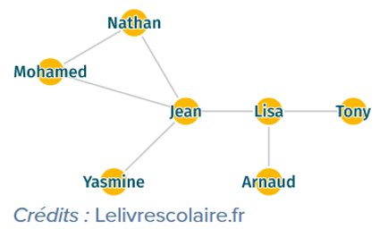
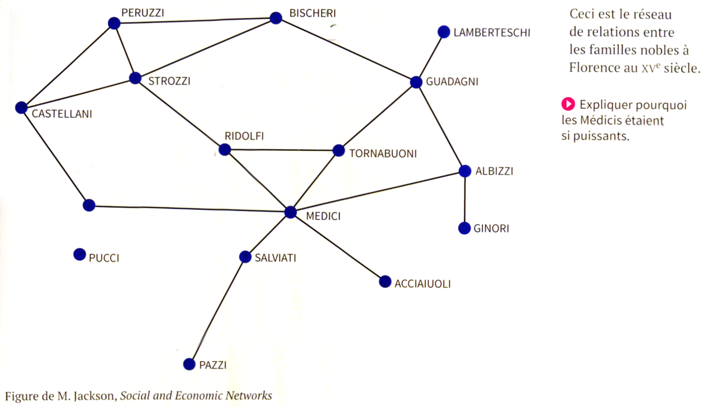

On considère un réseau social ayant 6 abonnés (A, B, C, D, E, F) où :
A est ami avec B, C et D
B est ami avec A et D
C est ami avec A, E et D
D est ami avec tous les autres abonnés
E est ami avec C, D et F
F est ami avec E et D
On schématise ce réseaux social par le graphe ci-contre :
Exemple 2
Construisez un graphe de réseau social à partir des informations suivantes :
Nathan est ami avec Mohamed et Jean
Mohamed est ami avec Nathan et Jean
Jean est ami avec Mohamed, Nathan, Yasmine et Lisa
Lisa est amie avec Jean, Tony et Arnaud
Tony est ami avec Lisa
Arnaud est ami avec Lisa
Yasmine est amie avec Jean
Vocabulaire des graphes
Chaîne : Dans un graphe, une chaîne reliant un sommet x à un sommet y est définie par une suite finie d'arêtes consécutives, reliant x à y.
exemple : dans le graphe ci-contre, A-D-E-C est une chaîne
Distance entre 2 sommets : La distance entre deux sommets d'un graphe est le nombre minimum d'arêtes d'une chaîne allant de l'un à l'autre.
exemple : la distance entre le sommet A et le sommet F est de 2 (chaîne A-D-F).
Excentricité : L'excentricité d'un sommet est la distance maximale existant entre ce sommet et les autres sommets du graphe.
exemple : distance (A-B) = 1 ; distance (A-C) = 1 ; distance (A-D) = 1 ; distance (A-E) = 2 ; distance (A-F) = 2 ; nous pouvons donc dire que l'excentricité
de A est de 2.
Centre : On appelle centre d'un graphe, le sommet d'excentricité minimale (le centre n'est pas nécessairement unique).
exemple : dans le graphe ci-contre tous les sommets ont une excentricité de 2 à l'exception du sommet D qui a une excentricité de 1, nous pouvons donc affirmer
que le centre du graphe 1 est le sommet D
Rayon : On appelle rayon d'un graphe G, l'excentricité d'un centre de G.
exemple : D a une excentricité de 1, c'est le centre du graphe 1, nous pouvons donc dire que le rayon du graphe 1 est de 1.
Diamètre : On appelle diamètre d'un graphe G, la distance maximale entre deux sommets du graphe G.
exemple : dans le graphe 1 la distance maximale entre 2 sommets est de 2, nous pouvons donc dire que le diamètre du graphe est de 2.
Applications
Application 1

Sur le graphe ci-contre :
1. citer une chaîne reliant Nathan et Arnaud
2. déterminer la distance entre Mohamed et Yasmine
3. déterminer l’excentricité des sommets Tony et Jean
4. déterminer le(s) centre(s)
5. déterminer le rayon du graphe
6. déterminer le diamètre du graphe
Application 2

Application 3
Activité livre scolaire P 92 : Projet 1 - construire un graphe Lien
« Petit monde »
Question : Si on considère le monde comme un graphe où chaque personne est un sommet du graphe et chaque relation (A "connait" B) est une arête du graphe,
quelle est l'excentricité d'un sommet quelconque d'après la théorie de Milgram ? Cette valeur de l'écartement a-t-elle évolué avec l'arrivée des réseaux sociaux ?
1967: expérience de Milgram --> toute personne peut être reliée à n’importe quelle autre par une courte chaîne de relations sociales.
2015 : hypothèse démontrée par un jeu télévisé suédois : donne pour mission à ses participants de serrer fictivement la main de l’américain Buzz Aldrin, 2ème homme
à avoir marché sur la lune, en passant aux max par 6 relations intermédiaires. Les participants y sont parvenus !
1998 : étude de l’université de Cornell sur la messagerie Microsoft (240 millions d’utilisateurs )--> degré de séparation moyen de 6,6.
2011 : Facebook évalue ce degré à 4,74 (720 millions d’utilisateurs)
En 2016, une mise à jour a révélé que ce chiffre était descendu à 3,57.
Tous les réseaux sociaux sont dotés d’un algorithme, qui a pour fonction de classer les contenus selon un ensemble de règles. Cet algorithme a un impact
majeur sur le temps passé par les internautes sur le réseau social et joue donc un rôle essentiel dans sa réussite.
Activité 1SF2
Hachette P 52/53 en classe en groupes
Délit et peine
L'article 22-33-2-2 du code pénal prévoit que : "Le fait de harceler une personne par des propos ou comportements répétés ayant pour objet ou
pour effet une dégradation de ses conditions de vie se traduisant par une altération de sa santé physique ou mentale est puni d'un an
d'emprisonnement et de 15 000 € d'amende."